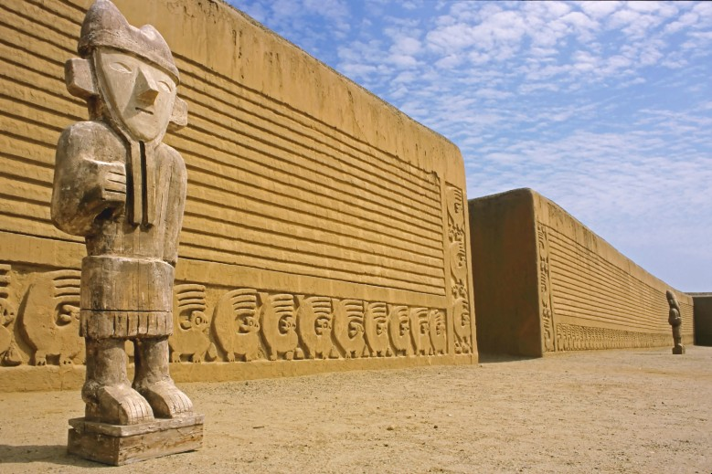

Postagem mais recente
Peru
O Peru é um país realmente incrível e aqui explicarei o porquê você deve escolhê-lo como destino para sua próxima viagem internacional. O Peru tem opções para todos os gostos e bolsos e durante todo o ano há vantagens em se visitar o antigo país dos Incas.
Quer saber o que fazer no Peru? Pois bem mochileiro, saiba que o país é repleto de destinos fascinantes e surpreendentes de norte a sul, cada qual com paisagens de tirar o fôlego, histórias milenares, culturas belíssimas e tradicionais, uma gastronomia incomparável e aventuras capazes de marcar uma vida inteira. Como especialista no turismo andino e também apaixonado por cada canto desse país incrível, resolvi fazer um pequeno resumo sobre o que fazer no Peru e quais destinos visitar na sua tão sonhada trip por lá. Vamos conferir?
Machu Picchu

Claro que a primeira dica sobre o que fazer no Peru não poderia ser diferente. Afinal, as ruínas incas de Machu Picchu são o principal cartão postal do país e um dos destinos mais cobiçados do mundo. Não é pra pouco!
O monumento é reconhecido como uma das 7 maravilhas do mundo e, além de toda a sua beleza arquitetônica e histórica, o lugar parece emanar uma energia indescritível, que mexe com quem pisa nessa terra sagrada.
Não deixe de visitar o Templo do Sol, das Três Janelas e o Setor Nobre da cidadela. Se tiver disposição e quiser adicionar uma pitada de adrenalina no passeio, inclua a trilha de Wayna Picchu no seu pacote também. Ah, e não se esqueça de levar o passaporte para ganhar o carimbo especial de Machu Picchu na entrada do parque.
Cusco

O berço da civilização inca é também a porta de entrada para a sua aventura em Machu Picchu. Afinal, é em Cusco que tudo começa e a cidade é o ponto de partida para os principais passeios na região.
Entre os atrativos imperdíveis, não deixe de fazer o tour arqueológico por Cusco, passando por incríveis ruínas e sítios milenares, como a Fortaleza de Saqsayhuaman, o “labirinto” de Qenqo e local dos banhos sagrados incas chamado Tambomachay.
Na Plaza de Armas, epicentro da cidade, você verá toda a influência da colonização espanhola nos casarões e na sua imensa catedral, além de encontrar bons restaurantes, bares, lojas e galerias de todos os tipos, bolsos e gostos.
Vale Sagrado dos Incas

Outra dica imperdível para quem busca o que fazer no Peru é visitar o fantástico e místico Vale Sagrado dos Incas, especialmente em uma primeira viagem ao país. Afinal, toda a região faz parte do trajeto clássico entre Cusco e Machu Picchu e esconde verdadeiros tesouros históricos e culturais dos Andes.
Entre as principais atrações do Vale Sagrado, vale destacar a feira de artesanato de Pisac, o povoado de Ollantaytambo e a beleza natural de Aguas Calientes.
Lima
Também não dá pra falar sobre o que fazer no Peru sem citar a sua capital! Afinal, a cidade é extremamente cosmopolita e repleta de atrações a serem exploradas dia e noite durante o seu roteiro. O bairro de Miraflores concentra grandes shoppings, museus, ótimos hotéis, restaurantes e lindos monumentos.
Já em Barranco, o bairro mais boêmio da capital, são os bares e boates que animam os visitantes. Um prato cheio para quem ama arte, cultura e também uma boa noitada.
Trujillo

Se quer saber o que fazer no Peru além de Cusco e Machu Picchu, uma dica é partir para o norte do país. Trujillo é um dos destinos que começam a chamar cada vez mais a atenção dos aventureiros e não é por acaso!
A região é repleta de mistérios, lendas e histórias, que vão desde ruínas arqueológicas pré-incas até pirâmides, com direito a múmias e tudo. Sem contar na beleza de seu litoral e na receptividade de seu povo local.
Cajamarca
Outro lugar surpreendente no Peru é a cidade de Cajamarca, palco da queda definitiva do império Inca e da conquista espanhola. Além de todo esse apelo histórico que a região carrega, diversos atrativos se destacam por lá e fascinam aqueles que a visitam, como as fabulosas Janelas de Otuzco, uma necrópole construída na encosta de uma montanha, Cumbemayo, um complexo hidráulico feito pelos incas, e a Catedral de Santa Catarina, um marco da arquitetura colonial.
Ica
Pode parecer cenário de filme, mas Ica existe mesmo! Em meio a um grande deserto de dunas gigantes, eis que surge Huacachina, um pequeno vilarejo às margens de um oásis com coqueiros. É, sem dúvidas, uma das paisagens mais alucinantes em todo o país e candidata forte a entrar num roteiro com o que fazer no Peru.
Aproveite para se aventurar num passeio de buggy e sandboard e admirar o sol se pôr trás da areia do deserto.
Huaraz
Um paraíso digno de papel de parede! Huaraz fica a mais de 3 mil metros de altitude e ostenta uma das paisagens mais exuberantes de todo o país, como o Parque Nacional de Huascarán.
Com enormes picos nevados e lagoas de águas de um azul impressionante, Huaraz é um convite aos amantes da natureza e do ecoturismo.
Arequipa
Entre a beleza arquitetônica colonial e imensos vulcões cobertos de neve, Arequipa é um destino perfeito para quem busca um roteiro que mescla história e aventura num só lugar. Além disso, a gastronomia da cidade é uma atração à parte, com pratos e bebidas típicas para nenhum visitante colocar defeito.
Entre as principais atrações, não deixe de visitar os seus vulcões, a Plaza de Armas, o Monastério de Santa Catalina e o Cânion del Colca.
Nazca
Outra dica sobre o que fazer no Peru é desbravar as misteriosas Linhas de Nazca. Para isso, é preciso embarcar em um passeio aéreo simplesmente indescritível e marcante, no qual você poderá ver com clareza todos os detalhes dos enormes e ainda indecifrados geoglifos talhados nas montanhas locais. Há quem acredite que tais obras tiveram ajuda de forças extraterrestres.
Paracas
Para finalizar nossas dicas sobre o que fazer no Peru, Paracas pode surgir como uma opção interessante para complementar ainda mais o seu roteiro pelo país.
Localizada a poucas horas de Lima, a cidade conta com um balneário selvagem e praticamente intocado pelo homem, onde focas, leões marinhos e aves de todos os tipos podem ser avistadas em seu habitat natural. Do lado oposto do Pacífico, um enorme deserto árido marca o cenário local, com direito também a um enorme geoglifo cravado em um de seus morros.
Enfim, esse foi o guia de hoje mochleiro
Caso não se sinta satisfeito, ou já tenha visitado o País dos Incas, acesse outros guias